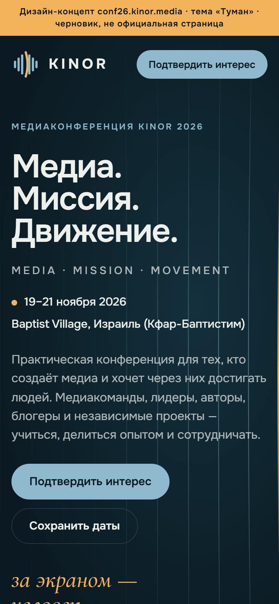
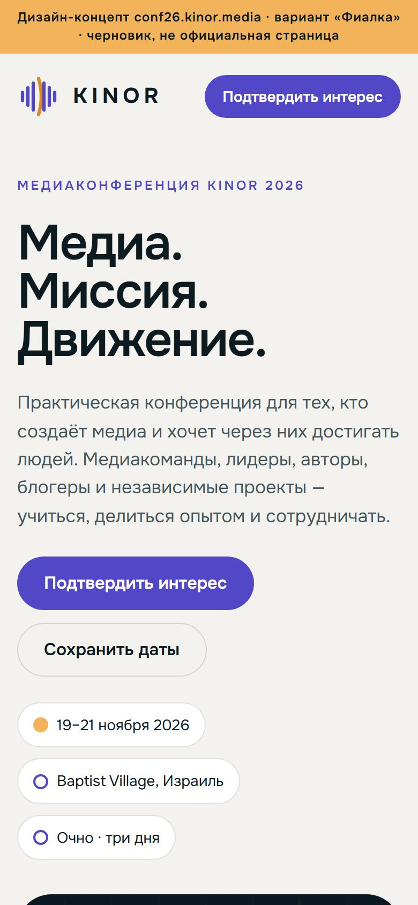
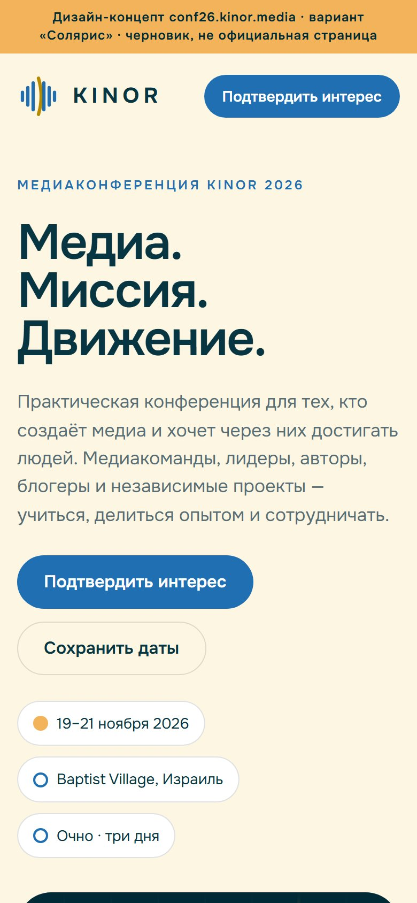

Медиаконференция KINOR 2026 · выбор оформления
Знак, тёплая струна, шрифты и структура страницы одинаковы. Меняются акцент, светлые поверхности и баланс тёмного и светлого. «Туман» оставлен для сравнения.






Как смотреть
Открывайте варианты на телефоне и на проекторе. Главные вопросы: хорошо ли читаются кнопки и метки, не похоже ли на Радио Кинор, хочется ли оставить заявку.